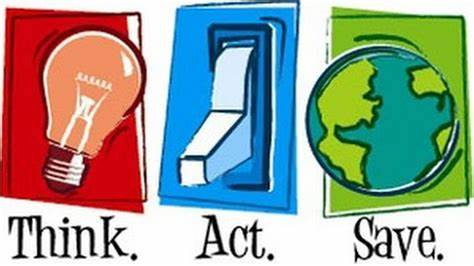
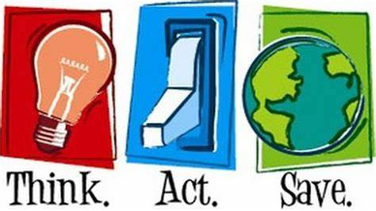
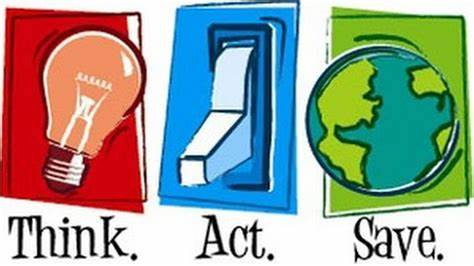
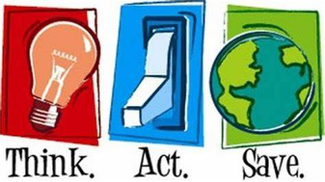

E-waste is not waste, it's a resource.
 

 

Help protect the environment by recycling your electronic waste and lithium batteries. Electronic waste and lithium batteries contain harmful materials that can pollute the environment and pose risks to human health. Recycling these items helps to reduce pollution, conserve natural resources, and prevent hazardous materials from ending up in landfills.

E-waste and lithium batteries contain toxic materials such as lead, mercury, cadmium, and lithium, which can harm the environment if not properly managed. When e-waste and lithium batteries end up in landfills or incinerators, these hazardous substances can leach into the soil, water, and air, causing pollution and posing a threat to human health and wildlife. Recycling e-waste and lithium batteries ensures that these hazardous materials are safely extracted and managed, preventing environmental contamination.

E-waste and lithium batteries also contain valuable and scarce resources such as precious metals, rare earth elements, and other valuable materials. Recycling e-waste and lithium batteries allows for the recovery and reuse of these valuable resources, reducing the need for new resource extraction and conserving natural resources. This can help mitigate the environmental and social impacts associated with mining and extraction of raw materials, including deforestation, habitat destruction, and human rights abuses.
Recycling e-waste and lithium batteries also helps conserve energy. Extracting and refining raw materials from their natural state requires significant energy inputs. Recycling, on the other hand, typically requires less energy as compared to mining, refining, and manufacturing processes. Additionally, recycling reduces the need for energy-intensive processes associated with the production of new electronic devices and batteries, including manufacturing, transportation, and distribution.
Recycling e-waste and lithium batteries can also contribute to mitigating climate change. E-waste and lithium batteries that end up in landfills or incinerators can release greenhouse gases, contributing to climate change. Recycling these waste streams can reduce greenhouse gas emissions by conserving energy, reducing the need for raw material extraction, and decreasing the amount of waste that goes to landfills or incinerators.
Many countries and regions have established regulations and laws to manage e-waste and lithium batteries. Recycling e-waste and lithium batteries is often mandatory or regulated to ensure proper management of hazardous materials, resource conservation, and environmental protection. Properly recycling e-waste and lithium batteries helps individuals, businesses, and governments comply with these regulations, avoiding fines and penalties while promoting responsible waste management practices.

Recycling e-waste and lithium batteries properly prevents health and safety risks associated with improper disposal, such as exposure to hazardous materials, fires, and explosions. Proper recycling ensures that these waste streams are managed safely, protecting the health and well-being of people and communities.